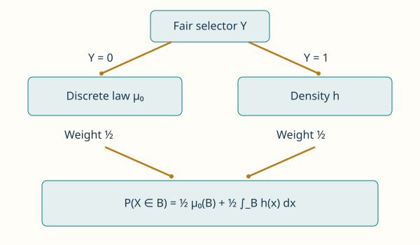
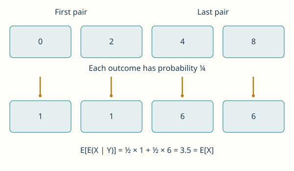
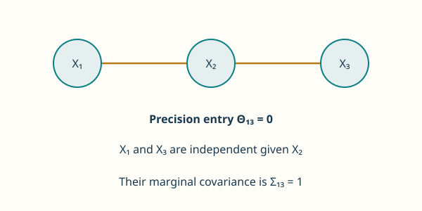

These notes are used for STAT 709 “Mathematical Statistics” at the University of Wisconsin–Madison. They are a learning aid rather than a substitute for a textbook; corrections and questions are welcome.
What changes when we learn. Lecture 4 explained how to average under a probability law. This lecture asks how that law changes when we learn something. Independence means that observing one variable does not change the law of another; conditional expectation gives an average adapted to the information available. These ideas connect product measures to prediction, privacy, and statistical models with hidden variables.
Route through the lecture. We begin with equivalent descriptions of independence and sums of independent variables. We then move from conditioning on an event to conditioning on a random variable. Regression provides the main statistical application: the conditional mean is the best prediction under squared error. The Gaussian and graphical-model material gives an optional extension.
Learning goals
Recognize independence through probabilities, laws, densities, and expectations.
Compute a conditional law or mean without dividing by a zero event probability.
Apply the tower property and explain what information each conditional mean uses.
Derive the prediction-error decomposition and distinguish uncorrelatedness, independence, and conditional independence.
1. Independence
Discrete variables. For discrete variables the familiar condition is \(P(X=x,Y=y)=P(X=x)P(Y=y)\) at every possible pair of values.
Why compare sets. For continuous variables, individual points usually have probability zero, so we must compare probabilities of sets.
Common setting. Unless stated otherwise, all random variables below are defined on the same probability space \((\Omega,\gF,P)\) and are real-valued.
Joint independence. The variables \(X_1,\ldots,X_n\) are jointly independent if, for every choice of Borel sets \(B_1,\ldots,B_n\),
\[P(X_1\in B_1,\ldots,X_n\in B_n)=\prod_{j=1}^nP(X_j\in B_j).\]
(1)Infinite families. An infinite family is independent when every finite subfamily satisfies this condition.
Pairwise independence. Pairwise independence requires the condition only for pairs; it need not imply joint independence.
For example, two independent fair bits \(U,V\) and their sum modulo two \(W\) are pairwise independent, but \(W\) is determined by \((U,V)\). The complete probability check is in Exercise 1.
A \(\pi\)-system is a collection closed under finite intersections. The \(\pi\)–\(\lambda\) theorem is a tool for extending identities from such a generating collection to its entire sigma-algebra. Here it lets us check independence on half-lines instead of on every Borel set.
The variables \(X_1,\ldots,X_n\) are jointly independent if and only if
\[P(X_1\le a_1,\ldots,X_n\le a_n)=\prod_{j=1}^nP(X_j\le a_j)\]
(2)for all \(a_1,\ldots,a_n\in\R\).
In CDF notation, this is \(F_{X_1,\ldots,X_n}(a_1,\ldots,a_n) =\prod_jF_{X_j}(a_j)\): the marginal CDFs need not be the same function. Half-lines generate the Borel sets, and uniqueness of probability measures extends agreement on their products to all Borel sets. A full proof uses the \(\pi\)–\(\lambda\) theorem1; see Durrett, Theorems 2.1.6–2.1.8.
Product laws and densities.
Product law. Equivalently, the joint law is the product measure
\[\mu_{X_1,\ldots,X_n}=\mu_{X_1}\otimes\cdots\otimes\mu_{X_n}.\]
(3)The measures agree on rectangles by (1), and the same uniqueness argument gives agreement everywhere.
Densities. If a joint Lebesgue density exists, independence is equivalent to \[p_{X_1,\ldots,X_n}(x_1,\ldots,x_n)=\prod_{j=1}^np_{X_j}(x_j) \quad\text{for Lebesgue-a.e. }(x_1,\ldots,x_n).\]
Mass functions. For a joint pmf on a countable product support, the equality holds at every point.
General laws. The measure formulation also covers mixed or singular laws.
Testing with functions.
Another equivalent criterion is that, for every collection of bounded Borel functions \(f_1,\ldots,f_n\),
\[\E\!\left[\prod_{j=1}^nf_j(X_j)\right] =\prod_{j=1}^n\E[f_j(X_j)].\]
(4)Indicators recover the set definition. The converse starts with simple functions and then passes to bounded limits; the full argument is in Exercise 1. The same identity holds when each \(f_j(X_j)\) is integrable: Tonelli applied to the absolute product establishes integrability before Fubini is used. It is not enough to check only \(\E[XY]=\E X\E Y\).
Instructor’s NoteTwo separate randomizers
Imagine two machines, each using its own coin tosses. Knowing the first machine’s result gives you no clue about the second. Independence turns a joint calculation into two separate calculations, which is why products keep appearing. Sharing even one hidden coin can change the picture.
The variables \(X_1,\ldots,X_n\) are jointly independent if, for every choice of Borel sets \(B_1,\ldots,B_n\), \[P(X_1\in B_1,\ldots,X_n\in B_n)=\prod_{j=1}^nP(X_j\in B_j).\] An infinite family is independent when every finite subfamily satisfies this condition. Pairwise independence requires the condition only for pairs; it need not imply joint independence.
Sum of independent random variables.
Recall the definition of independence. Let \(X,Y\) be independent with laws \(\mu_X,\mu_Y\) and CDFs \(F_X,F_Y\).
For every \(z\in\R\), \[P(X+Y\le z)=\int_{\R}F_X(z-y)\,\mu_Y(dy).\] The notation \(\mu_Y(dy)\) means integration in the value variable \(y\) against the law of \(Y\); it is the same operation as \(d\mu_Y(y)\).
Proof. Use the joint law, then independence and Tonelli for a nonnegative indicator: \[\begin{align*} P(X+Y\le z) &=\int_{\R^2}\mathbf1_{\{x+y\le z\}}\,\mu_{X,Y}(dx,dy)\\ &=\int_{\R}\left[\int_{\R}\mathbf1_{\{x\le z-y\}}\,\mu_X(dx)\right]\mu_Y(dy)\\ &=\int_{\R}F_X(z-y)\,\mu_Y(dy). \end{align*}\] ◻
Picture: adding slices.
Let \(X,Y\) be independent and uniform on \([0,1]\). Move the boundary \(x+y=z\): what does each horizontal slice contribute to \(P(X+Y\le z)\)?
See how the slices add up
z = 0.5 · probability = 0.125
z = 1 · probability = 0.5
z = 1.5 · probability = 0.875
Move the boundary x + y = z
Same probability, added over y
Inspect a slice
- Threshold z
- 1
- Slice length
- 0.75
- P(X + Y ≤ z)
- 0.5
How the slices become a probability
Reading the picture.
Fixing \(y\) leaves the event \(X\le z-y\), with probability \(q_z(y)=\min(1,\max(0,z-y))\). Its horizontal slice in the unit square has length \(q_z(y)\). Averaging these lengths over \(0\le y\le1\) gives the shaded area, hence the CDF of the sum. Ordinary area is probability here because the square has joint density one. Proposition 1 uses the law \(\mu_Y\) to make the same averaging argument more generally.
Static comparison.
For \(0\le z\le1\) the area is \(z^2/2\); for \(1\le z\le2\) it is \(1-(2-z)^2/2\). The boundaries \(z=1/2,1,3/2\) give areas \(1/8,1/2,7/8\). At \(z=1,y=1/4\), the horizontal slice has length \(3/4\).
If both variables have densities, their sum has the convolution density \(p_{X+Y}(z)=\int_{\R}p_X(z-y)p_Y(y)\,dy\). Integrating this candidate over \((-\infty,z]\) and applying Tonelli gives the displayed CDF, which verifies the formula. Each step uses material from the preceding lectures; it is worth identifying the measure and the variable of integration before calculating.
If independent \(X\sim N(\mu_1,\sigma_1^2)\) and \(Y\sim N(\mu_2,\sigma_2^2)\), then \(X+Y\sim N(\mu_1+\mu_2,\sigma_1^2+\sigma_2^2)\). A zero variance means a constant random variable.
If \(X_1,\ldots,X_n\) are independent \(N(0,1)\) variables, then \(\sum_{j=1}^nX_j^2\sim\chi_n^2\). This is a Gamma law with shape \(n/2\) and scale \(2\), with density \[p(s)=\begin{cases} \dfrac{s^{n/2-1}e^{-s/2}}{2^{n/2}\Gamma(n/2)},&s>0,\\ 0,&s\le0. \end{cases}\] Here \(\Gamma(\alpha)=\int_0^\infty t^{\alpha-1}e^{-t}\,dt\).
Both calculations are supplied in Exercise 6.
Characteristic functions.
Definition. The characteristic function of \(X\) is \(\varphi_X(t)=\E[e^{itX}]=\E[\cos(tX)]+i\E[\sin(tX)]\) for \(t\in\R\).
Existence and independence. It always exists because \(|e^{itX}|=1\). Applying (4) to real and imaginary parts shows that independence gives \(\varphi_{X+Y}(t)=\varphi_X(t)\varphi_Y(t)\).
Normal formula. For a normal variable, \[\varphi_{N(\mu,\sigma^2)}(t)=\exp(i\mu t-\sigma^2t^2/2).\]
Sums and proof route. Multiplication therefore adds normal means and variances. Characteristic functions determine laws uniquely; the inversion and uniqueness proof is in [2], Section 3.3.1. Exercise 6 derives the normal formula directly, rather than assuming it as an unexplained calculation.
Instructor’s NoteWhy the Gaussian law fits averaging
In 1809, Gauss in effect worked backward: if averaging equally precise, independent measurements should give the most plausible value, what error law makes that happen? This route leads to Gaussian errors and, for fitting linear relationships, least squares. Think of the normal law as a model chosen to make these familiar operations fit together. In that light, Example 1 feels natural: adding or averaging independent Gaussian measurements keeps us in the same family.
An earlier thread goes back to de Moivre’s normal approximation to the binomial distribution. Laplace’s work on the central limit theorem in 1810, and later generalizations, gave the bell curve a much broader role. Intuitively, many small independent effects can add up to approximately Gaussian noise, even when the individual effects are not Gaussian. A distribution used to justify averaging also emerges from averaging! For historical accounts, see Aldrich’s account of Gauss and Le Cam, pp. 79–81.
2. Some examples
Uniform distribution on the sphere.
Normalize the vector. Let \(G\sim N(0,I_d)\) with \(d\ge2\), \(R=\|G\|_2\), and \(U=G/R\) on \(\{R>0\}\). The event \(G=0\) has probability zero, so the value assigned to \(U\) there does not change its law. The vector \(U\) belongs to \(S^{d-1}=\{u\in\R^d:\|u\|_2=1\}\).
Rotation symmetry. For every orthogonal matrix \(Q\in\R^{d\times d}\), \(QG\) has the same law as \(G\) and \(\|QG\|_2=\|G\|_2\). Thus \(QU\) has the same law as \(U\).
Uniformity and proof. In fact, \(U\) has normalized surface-area measure on the sphere, the unique orthogonally invariant probability measure, and \(U\) and \(R\) are independent. The polar-coordinate factorization proving the uniform law and independence is given in Exercise 7. A separate further-reading argument establishes uniqueness of the invariant law.
One dimension. For \(d=1\), the corresponding statement says that a normal variable’s sign is a fair choice from \(\{-1,1\}\), independent of its absolute value.
Instructor’s NoteDirection and distance
Consider a heuristic argument based on symmetry. Rotating the Gaussian cloud changes its direction but not its distance from the origin, and leaves its distribution unchanged. Think of the cloud as concentric shells. Every shell looks the same in every direction. Learning which shell a point landed in tells you its distance from the center, but gives you no preferred direction.
Picture: keep the direction.
For \(G\sim N(0,I_2)\), compare the Gaussian cloud with \(G/\|G\|_2\) on the unit circle. Keep only one shell: does it favor a direction?
From Gaussian noise to a uniform direction
¼ of each shell’s probability in each quadrant
Normalization preserves the angle
Select a shell; keep the sample fixed
The same points, with radius removed
All radii.
- Exact sector probability
- 0.25
- Observed sector fraction
- 160 / 600 = 0.2667
- Shell probability
- 1
Teal: inside the sector. Faint points: outside the selected shell. Highlighted point 1: radius 1.3937; its direction keeps the same angle.
Why the direction stays uniform
Static picture.
For \(d=2\), write \(G=R(\cos\Theta,\sin\Theta)\). The angle is uniform on \([0,2\pi)\), and independent of \(R\). Two annuli with equal angular sectors illustrate the same angular proportions even though the probability of the annuli differs.
Reading the picture.
Dividing by the radius moves a point along its ray to the unit circle. For either shell \(1/2\le R<3/2\) or \(3/2\le R<5/2\), a sector of \(\alpha\) degrees has conditional probability \(\alpha/360\). The shell’s probability is \(P(a\le R<b)=e^{-a^2/2}-e^{-b^2/2}\), so each quadrant has one quarter of that shell’s probability. In a fixed sample of 600 points, the observed sector fractions fluctuate around these exact proportions. The complete polar-coordinate proof explains the uniform direction and its independence from the radius.
Mutual information.
The mutual information of \(X,Y\) is \[I(X;Y)=D_{\mathrm{KL}}(\mu_{X,Y}\|\mu_X\otimes\mu_Y).\] Use the Lecture 4 convention: \(D_{\mathrm{KL}}(P\|Q)=+\infty\) when \(P\not\ll Q\); otherwise it is \(\int r\log r\,dQ\) with \(r=dP/dQ\) and \(0\log0=0\). Mutual information may be infinite. It compares the actual joint law with the law that would have the same marginals but independent coordinates. Consequently \(I(X;Y)\ge0\), with equality exactly when \(X,Y\) are independent. Swapping the coordinates gives \(I(X;Y)=I(Y;X)\). Section 4.1 makes the connection to learning from an observation explicit.
Instructor’s NoteWhat does one variable tell us about another?
Intuitively speaking, mutual information measures how much observing one variable tells us about another. Before observing \(X\), we use the marginal law of \(Y\); after observing \(X=x\), we use its conditional law. If our picture of \(Y\) does not change, the observation has told us nothing about it.
Differential privacy.
Data and exposure. A database is a vector \(D\in\mathcal D^n\) of \(n\) users’ records. Releasing an exact average can expose a missing record: if three incomes are averaged and an observer knows two, the third can be recovered.
Randomness. A randomized algorithm adds uncertainty to its output while trying to preserve useful aggregate information. Its probability is over the algorithm’s random coins, with the database held fixed.
Privacy guarantee. Fix \(\epsilon>0\). A real-valued randomized algorithm \(\mathcal M\) is \(\epsilon\)-differentially private under replacement adjacency if, for every pair \(D,D'\in\mathcal D^n\) differing in one record and every Borel output set \(S\subseteq\R\), \[P(\mathcal M(D)\in S)\le e^\epsilon P(\mathcal M(D')\in S).\]
Interpretation. The condition also applies with \(D,D'\) exchanged. Small \(\epsilon\) makes the output distributions similar when one person’s record is replaced. This fixed-size model protects the record’s value; adding or removing a person is another adjacency convention, not the one used here.
Independent composition.
Joint release. Suppose \(\mathcal M_j\) is \(\epsilon_j\)-private and the mechanisms use independent random coins for each fixed database. Releasing the whole vector \((\mathcal M_1(D),\ldots,\mathcal M_m(D))\) is \(\sum_j\epsilon_j\)-private.
Complete guarantee. The bound must hold for every measurable output set, not just a product of intervals; a complete measure argument is in Exercise 8.
Adaptive extension. Adaptive composition also holds when each next release is private conditional on every prior transcript. That stronger result is outside this proof; see Dwork and Roth, Section 3.5 and Appendix B.1.
Instructor’s NoteSeveral glimpses of one record
One noisy answer gives a blurry glimpse of the data. Several answers give several glimpses, and together they can be more revealing. Composition keeps an account of the information released across those answers. Intuitively speaking, the noise makes it hard to distinguish two databases that differ in one person’s record by looking at their released answers.
3. Conditional expectation
We progress from elementary definitions in Section 3.1 to a working definition using conditional laws in Section 3.2. The general sigma-algebra definition in Section 3.3 is left to self-study; it is useful for readers interested in probability theory and stochastic processes. We then return to the working rules for conditional means in Section 3.4.
3.1. Events, values, and densities
Conditioning on an event.
For \(A\in\gF\) with \(P(A)>0\), define
\[P(B\mid A)=\frac{P(B\cap A)}{P(A)},\qquad B\in\gF.\]
(5)We keep only outcomes in \(A\) and renormalize their total probability to one. Conditioning on \(A^c\) is defined by the same formula when \(P(A^c)>0\).
Conditioning on a value.
Discrete conditioning. For a discrete \(Y\) and \(P(Y=y)>0\), \(P(B\mid Y=y)=P(B\cap\{Y=y\})/P(Y=y)\). Event conditioning is the case \(Y=\mathbf1_A\), \(y=1\).
Zero-probability obstacle. For a continuously distributed \(Y\), the denominator is zero at each point, so this quotient cannot define conditioning on \(Y=y\).
Conditional density. If a joint density exists, let \(p_Y(y)=\int p_{X,Y}(x,y)\,dx\). For \(0<p_Y(y)<\infty\), a conditional density is
\[p_{X\mid Y}(x\mid y)=\frac{p_{X,Y}(x,y)}{p_Y(y)}.\]
(6)It is nonnegative and integrates to one. The discrete formula uses sums instead of integrals. Values of \(y\) outside this set have zero probability under the law of \(Y\) and can be assigned a fixed probability law. What matters is a family of laws that averages back to the joint law, as specified next.
Instructor’s NoteA law for each possible observation
Intuitively speaking, learning \(Y=y\) selects one probability law for \(X\) from a family indexed by the possible observations. This is a useful working picture for statistics even when a pmf or a Lebesgue density does not exist, as with a distribution on a sphere. More complicated observations, such as a whole sequence \(Y_1,Y_2,\ldots\), motivate the general definition left for self-study.
3.2. Regular conditional probabilities
Two versions represent the same conditional quantity but may differ on observed values in a set of probability zero. Substituting the random observation \(Y\) into either version gives equal random variables almost surely. A particular zero-probability value is not fixed by this agreement.
A probability law. For random vectors \(X\in\R^p\), \(Y\in\R^q\), a regular conditional distribution of \(X\) given \(Y\) is a family \(K(y,\cdot)\) of probability measures on \((\R^p,\mathcal B(\R^p))\) such that
Measurable dependence. \(y\mapsto K(y,A)\) is Borel measurable for each Borel \(A\) and
Joint-law identity.
\[P(X\in A,Y\in B)=\int_B K(y,A)\,\mu_Y(dy) \quad(A\in\mathcal B(\R^p),\ B\in\mathcal B(\R^q)).\]
(7)
We write \(K(y,A)=P(X\in A\mid Y=y)\). When \(X\) is real and integrable, define \(h(y)=\int x\,K(y,dx)\) where the absolute integral is finite, and set \(h=0\) elsewhere. Then \(\E[X\mid Y=y]=h(y)\) and \(\E[X\mid Y]=h(Y)\).
Existence and value space. Such a family exists for Euclidean-valued random vectors; see Durrett, Theorems 4.1.17–4.1.18. Its measures are on the value space of \(X\), not on the original sample space \(\Omega\).
Versions. The family is determined only for \(\mu_Y\)-almost every \(y\). Two choices are called versions2.
Densities and other laws. For a joint density, \(K(y,A)=\int_Ap_{X\mid Y}(x\mid y)\,dx\) at the values where (6) applies. Mixed distributions and distributions on a sphere fit the same definition without a Lebesgue density.
Averaging the conditional averages.
Average conditional integrals. Extending (7) from indicators to simple functions and then using monotone convergence gives \[\E[g(X)]=\int\left[\int g(x)K(y,dx)\right]\mu_Y(dy)\] for nonnegative \(g\), and for signed \(g\) with \(\E|g(X)|<\infty\) by subtracting positive and negative parts.
Tower identity. In particular, \(\int\int|x|K(y,dx)\mu_Y(dy)=\E|X|<\infty\), which justifies the definition of \(h\) almost everywhere and gives the tower identity \[\E X=\E[\E(X\mid Y)]=\int_{\R^q}\E[X\mid Y=y]\,\mu_Y(dy).\]
Function and random variable. Here \(h\) is a function on the observation space and \(h(Y)\) is a random variable on \(\Omega\). For densities the correct formula is \(h(y)=\int_{\R}x\,p_{X\mid Y}(x\mid y)\,dx\).
Picture: the information you keep.
Consider six outcomes with values \(X=(0,2,2,4,6,8)\) and probabilities \((1,1,2,2,1,1)/8\). Let \(Y=A\) for the first three outcomes and \(Y=B\) for the last three. What can your prediction use when you know only the group?
What information does the prediction use?
| Outcome | 1 | 2 | 3 | 4 | 5 | 6 |
|---|---|---|---|---|---|---|
| Probability | 1/8 | 1/8 | 2/8 | 2/8 | 1/8 | 1/8 |
| X | 0 | 2 | 2 | 4 | 6 | 8 |
| No observation | 3.5 | 3.5 | 3.5 | 3.5 | 3.5 | 3.5 |
| Observe group | 1.5 | 1.5 | 1.5 | 5.5 | 5.5 | 5.5 |
| Observe outcome | 0 | 2 | 2 | 4 | 6 | 8 |
- Information
- Group A or B
- Mean prediction
- 3.5
- E[X]
- 3.5
| Outcome | 1 | 2 | 3 | 4 | 5 | 6 |
|---|---|---|---|---|---|---|
| Probability | 1/8 | 1/8 | 2/8 | 2/8 | 1/8 | 1/8 |
| X | 0 | 2 | 2 | 4 | 6 | 8 |
| Prediction | 1.5 | 1.5 | 1.5 | 5.5 | 5.5 | 5.5 |
How to compute the weighted group averages
Reading the picture.
Replace each outcome by its group’s probability-weighted average. Both groups have probability \(1/2\). Their conditional weights are \((1/4,1/4,1/2)\) in \(A\) and \((1/2,1/4,1/4)\) in \(B\), giving \(h(A)=3/2\) and \(h(B)=11/2\). The random variable \(h(Y)=\E[X\mid Y]\) assigns the appropriate group mean to each outcome; it is constant within a group. Averaging the predictions gives \(\frac12\cdot\frac32+\frac12\cdot\frac{11}2=\frac72=\E X\).
Static comparison.
With no observation, all six predictions are \(7/2\). Observing the group gives \[(3/2,3/2,3/2,11/2,11/2,11/2);\] observing the exact outcome gives \((0,2,2,4,6,8)\). In all three cases the probability-weighted mean prediction is \(7/2\). Tile widths show probabilities, while bar heights show values. This example uses different probabilities and values from Exercise 4.
Let \(Y\) be a fair Bernoulli variable. Conditional on \(Y=0\), draw \(X\) from a discrete law \(\mu_0\); conditional on \(Y=1\), draw \(X\) with density \(h\). The variable \(Y\) is a latent variable: it selects the component but need not be observed along with \(X\). This gives a probabilistic construction for the mixed law from Lecture 4.
A finite information partition.
If observing \(Y\) separates the sample space into groups, \(\E[X\mid Y]\) assigns each group its own probability-weighted average of \(X\). One value is used throughout each group: we know the group, not the exact outcome.
3.3. A general definition*
Low priority—not examined: Information as a sigma-algebra
The measurable factorization lemma says that a real-valued function measurable with respect to \(\sigma(Y)\) can be written as \(h(Y)\) for a measurable function \(h\). It turns “depends only on the information in \(Y\)” into an actual function of the observed value.
Given information. Let \(\E|X|<\infty\) and let \(\mathcal A\subseteq\gF\) be a sub-sigma-algebra.
Defining requirements. A conditional expectation \(\E[X\mid\mathcal A]\) is an integrable, \(\mathcal A\)-measurable random variable \(H\) such that \(\int_AH\,dP=\int_AX\,dP\) for every \(A\in\mathcal A\).
Existence and uniqueness. It exists and is unique almost surely.
The existence follows by applying Radon–Nikodym on \((\Omega,\mathcal A,P)\) to the finite positive measures \(A\mapsto\int_AX^+dP\) and \(A\mapsto\int_AX^-dP\), and subtracting their densities. For uniqueness, if \(H,H'\) both work, integrate their difference on \(\{H-H'>1/k\}\in\mathcal A\) for each positive integer \(k\). The integral is zero, so all these sets have probability zero; exchange \(H,H'\) to conclude \(H=H'\) a.s.
If \(Y:(\Omega,\gF)\to(\Lambda,\mathcal G)\) is measurable, then \[\sigma(Y)=\{Y^{-1}(B):B\in\mathcal G\}.\] The symbol is \(B\in\mathcal G\), not \(B\subset\mathcal G\). Define \(\E[X\mid Y]=\E[X\mid\sigma(Y)]\) and \(P(A\mid\mathcal A)=\E[\mathbf1_A\mid\mathcal A]\). The factorization lemma3 gives a measurable \(h\) with \(\E[X\mid Y]=h(Y)\); for Euclidean \(Y\), \(h\) is Borel measurable. Its values are only determined \(\mu_Y\)-a.e. The conditional-law construction above satisfies the defining integral identities and hence is a version of this conditional expectation. See [2], Section 4.1, for the general framework, including conditioning on an infinite observation sequence.
For \(\mathcal A=\{\emptyset,\Omega\}\), \(\E[X\mid\mathcal A]=\E X\) a.s. If \(\sigma(X)\subseteq\mathcal A\), then \(\E[X\mid\mathcal A]=X\) a.s. In each case the proposed variable is measurable with respect to the available information and has the required integrals.
Instructor’s NoteA coarser mesh
Intuitively speaking, \(\sigma(Y)\) contains the events that we can tell apart by observing \(Y\). This lets us focus on the information relevant to our observation even when the full sample space is very large or abstract. Imagine putting a mesh over the outcomes and replacing the values inside each cell by their average. A coarse mesh remembers only broad groups; a finer mesh keeps more detail. One giant cell gives the overall mean. If the mesh already tells you the value of \(X\), averaging changes nothing.
Conditional convergence theorems.
Conditional expectations of nonnegative variables are also defined with values in \([0,\infty]\), by increasing integrable truncations. With this convention, \[\begin{align*} 0\le X_n\uparrow X&\quad\Longrightarrow\quad \E[X_n\mid\mathcal A]\uparrow\E[X\mid\mathcal A]\quad\text{a.s.},\\ X_n\ge0&\quad\Longrightarrow\quad \E[\liminf_nX_n\mid\mathcal A]\le\liminf_n\E[X_n\mid\mathcal A]\quad\text{a.s.} \end{align*}\] If \(X_n\to X\) a.s. and \(|X_n|\le V\) a.s. for an integrable \(V\ge0\), then \(\E[X_n\mid\mathcal A]\to\E[X\mid\mathcal A]\) a.s. These are conditional MCT, Fatou, and DCT. Their proofs, allowing infinite limits only in the nonnegative statements, are supplied in Exercise 14.
3.4. Working rules for conditional means
For integrable \(X,X_1,X_2\), constants \(a,b\), and Euclidean observations \(Y,Z\), the following identities hold almost surely.
Linearity: \(\E[aX_1+bX_2\mid Y]=a\E[X_1\mid Y]+b\E[X_2\mid Y]\).
Known factors: for bounded Borel \(g\), \(\E[g(Y)X\mid Y]=g(Y)\E[X\mid Y]\). The identity also holds if \(g(Y)\) is unbounded and both sides are integrable; it suffices that \(\E|X|<\infty\) and \(\E|g(Y)X|<\infty\).
If \(Z\) is a measurable function of \(Y\), then \(\E[\E(X\mid Y)\mid Z]=\E[X\mid Z]\) and \(\E[\E(X\mid Z)\mid Y]=\E[X\mid Z]\).
If \(X,Y\) are independent, \(\E[X\mid Y]=\E X\).
The nested-observation condition is essential in the tower rule. In the general notation, if \(\mathcal A_0\subseteq\mathcal A\), then \[\E[\E(X\mid\mathcal A)\mid\mathcal A_0] =\E[X\mid\mathcal A_0] =\E[\E(X\mid\mathcal A_0)\mid\mathcal A].\] For the high-priority observation-space rules, the proof in Exercise 9 uses only the conditional-law identity and integration. The optional sigma-algebra framework is not needed to use or justify them.
4. Examples
4.1. Mutual information (continued)
Average conditional divergence. Suppose \(X,Y\) have a joint Lebesgue density, or a joint pmf on a countable product support. Conditional laws are specified for \(\mu_X\)-almost every \(x\), not necessarily at every conceivable value. Then
\[I(X;Y)=\int D_{\mathrm{KL}}(\mu_{Y\mid X=x}\|\mu_Y)\,\mu_X(dx).\]
(8)Justifying the identity. This equality is valid even when its value is \(+\infty\). A rigorous route avoids an unjustified exchange of a signed logarithmic integral: write \(r=p_{X,Y}/(p_Xp_Y)\) on the product-marginal support and use \(\psi(r)=r\log r-r+1\ge0\) with Tonelli.
Complete proof. The full calculation is in Exercise 11.
When observing \(X\) changes nothing.
If \(X,Y\) are independent, the constant family \(K(x,A)=\mu_Y(A)\) satisfies the conditional-law identity. Thus \(\mu_{Y\mid X=x}=\mu_Y\) for \(\mu_X\)-a.e. \(x\), and (8) equals zero. Conversely, zero mutual information gives equality of the joint and product laws, hence independence. The same exercise proves this without assuming a density when the KL divergence is defined on laws.
4.2. Regression function
Model. Let \(Y\in\R\) be a response, let \(Z\in\R^p\) be observed predictors, and assume \(\E[Y^2]<\infty\).
Prediction goal. We seek a Borel function \(g\) minimizing \(\E[(Y-g(Z))^2]\).
Information constraint. The available information is \(Z\); a predictor cannot use the unobserved value of \(Y\).
For every \(c\in\R\), \(\E[(Y-c)^2]=\operatorname{var}(Y)+(c-\E Y)^2\). Thus the best constant is \(c=\E Y\).
For random vectors \(X\in\R^p\), \(Y\in\R^q\), a regular conditional distribution of \(X\) given \(Y\) is a family \(K(y,\cdot)\) of probability measures on \((\R^p,\mathcal B(\R^p))\) such that \(y\mapsto K(y,A)\) is Borel measurable for each Borel \(A\) and \[P(X\in A,Y\in B)=\int_B K(y,A)\,\mu_Y(dy) \quad(A\in\mathcal B(\R^p),\ B\in\mathcal B(\R^q)).\] We write \(K(y,A)=P(X\in A\mid Y=y)\). When \(X\) is real and integrable, define \(h(y)=\int x\,K(y,dx)\) where the absolute integral is finite, and set \(h=0\) elsewhere. Then \(\E[X\mid Y=y]=h(y)\) and \(\E[X\mid Y]=h(Y)\).
Expand \(Y-c=(Y-\E Y)+(\E Y-c)\); the cross term has mean zero. Now recall the conditional mean and define the regression function
\[\mu(z)=\E[Y\mid Z=z].\]
(9)It is defined up to \(\mu_Z\)-null sets, which give the same random prediction \(\mu(Z)\) almost surely.
If \(\E[Y^2]<\infty\) and \(\E[g(Z)^2]<\infty\), then
\[\E[(Y-g(Z))^2]=\E[(Y-\mu(Z))^2]+\E[(g(Z)-\mu(Z))^2].\]
(10)The unique minimizing random prediction is \(g(Z)=\mu(Z)\) a.s.; equivalently, \(g=\mu\) for \(\mu_Z\)-almost every predictor value.
Every predictor with finite risk is square-integrable, since \(g(Z)^2\le2(Y-g(Z))^2+2Y^2\). Thus the stated class loses no finite-risk competitor. Conditional Cauchy–Schwarz gives \(\E[\mu(Z)^2]\le\E[Y^2]\). The essential cancellation is \(\E[(Y-\mu(Z))h(Z)]=0\) for each square-integrable \(h(Z)\). A complete justification and expansion are in Exercise 10; see also [1], Section 1.4.
Noise and explained variation.
Residual. Writing \(Y=\mu(Z)+\varepsilon\) defines the residual \(\varepsilon=Y-\mu(Z)\) and gives \(\E[\varepsilon\mid Z]=0\).
Variance decomposition. In particular, \(\varepsilon\) is uncorrelated with \(\mu(Z)\) and \[\operatorname{var}(Y)=\operatorname{var}(\mu(Z))+ \operatorname{var}(\varepsilon),\qquad \E[\varepsilon^2]=\E[\operatorname{var}(Y\mid Z)].\]
Conditional variance. Here \(\operatorname{var}(Y\mid Z)=\E[(Y-\mu(Z))^2\mid Z]\).
Interpretation. Zero conditional mean does not assert that the residual is independent of \(Z\). The first risk term is irreducible error for prediction using these particular predictors and squared loss.
Instructor’s NoteAn average for people like this
The overall mean gives everyone the same prediction. Regression first looks for outcomes with the same observed predictors and averages within that group. The remaining error is the variation inside the group; better fitting cannot remove variation that the predictors do not tell us about. Intuitively speaking, even with infinite samples and a perfect statistical method, that within-group variation remains. This is why we regard \(\mu(Z)\) as the target or “gold standard” for predicting \(Y\) from \(Z\).
Picture: the best prediction in a group.
For \(z=0,1,2\), suppose that \(Y=z-1\) or \(z+1\), each with conditional probability \(1/2\). Which prediction \(c\) minimizes the average squared distance in each group?
Find the best prediction within a group
Dots: possible Y · squares: conditional means. Dashed line: guide between the three means.
Each curve is minimized at its group mean
Dots: possible Y · squares: conditional means. Dashed line: guide between the three means.
Each curve is minimized at its group mean
- Conditional mean μ(z)
- 1
- Remaining noise
- 1
- Excess loss
- 1
- Total conditional loss
- 2
Squared residual contributions (each weighted by ½): 0 + 2 = 2. Curve labels: gold z = 0; navy z = 1; plum z = 2.
Why the conditional mean is best
A static prediction picture.
At predictor values \(z=0,1,2\), suppose the response equals \(z-1\) or \(z+1\) with equal conditional probabilities. Its conditional mean is \(z\) and the conditional squared-error loss at a prediction \(c\) is \(1+(c-z)^2\). The three loss curves have the same shape, centered at their respective group means. This is an illustration of the theorem, separate from Exercise 5.
Reading the picture.
The average squared residual is \(\frac12(z-1-c)^2+\frac12(z+1-c)^2=1+(c-z)^2\). The first term is remaining noise; the second is the cost of missing the conditional mean. Choosing \(c=z\) gives the minimum \(1\) in each group. The three means \((0,0),(1,1),(2,2)\) describe the regression function at these predictor values; a line joining them is only a visual guide. This is a population conditional mean, with no sample fitting involved. See the squared-error decomposition and its complete proof.
Kernel smoothing estimates a mean near a predictor value by giving more weight to observations with nearby predictors. A bandwidth controls how wide a neighborhood contributes. This statistical smoothing use of “kernel” is different from a conditional-probability kernel.
Flexible and restricted predictors.
A nonparametric model allows a broad class of regression functions; methods such as kernel smoothing4 estimate local averages. A parametric model instead restricts the function to a family described by finitely many parameters, for example \(\mu(Z)=\beta_0+\beta^\top f(Z)\) for a fixed feature map \(f\). If that model is incorrect, least squares finds the best approximation within the chosen family, rather than necessarily the full conditional mean.
Instructor’s NoteA large space of possible curves
Intuitively speaking, a nonparametric model gives us a large space of possible regression functions to search through. That freedom is useful, but it also makes learning the function harder. A parametric model, such as a line or a fixed set of features, gives us a simpler and more convenient family to work with.
4.3. Conditional multivariate normal*
Low priority—not examined: Gaussian regression and residual covariance
Motivation. What happens when the response and predictors are jointly Gaussian? Since the regression function is a conditional mean, studying the conditional Gaussian law will show why a linear predictor arises here.
Partition the vector. Let \(X\sim N(\mu,\Sigma)\) with \(\Sigma\) positive definite, and partition \(X=(X^{(1)},X^{(2)})\), with dimensions \(m\) and \(d-m\), where \(1\le m<d\). Write \[\mu=\begin{pmatrix}\mu^{(1)}\\\mu^{(2)}\end{pmatrix},\qquad \Sigma=\begin{pmatrix}\Sigma^{(11)}&\Sigma^{(12)}\\ \Sigma^{(21)}&\Sigma^{(22)}\end{pmatrix},\qquad B=\Sigma^{(12)}(\Sigma^{(22)})^{-1}.\]
Covariance and precision. The principal block \(\Sigma^{(22)}\) is positive definite and invertible. The Schur complement \[S=\Sigma/\Sigma^{(22)} =\Sigma^{(11)}-\Sigma^{(12)}(\Sigma^{(22)})^{-1}\Sigma^{(21)}\] is also positive definite: for nonzero \(v\), use \(w=-(\Sigma^{(22)})^{-1}\Sigma^{(21)}v\) to get \(v^\top Sv=(v,w)^\top\Sigma(v,w)>0\). The precision matrix is \(\Theta=\Sigma^{-1}\), and its blocks are \[\begin{align*} \Theta^{(11)}&=S^{-1},&\Theta^{(12)}&=-S^{-1}B,\\ \Theta^{(21)}&=-B^\top S^{-1},& \Theta^{(22)}&=(\Sigma^{(22)})^{-1}+B^\top S^{-1}B. \end{align*}\] Multiplication by \(\Sigma\) verifies these identities directly.
Conditional distribution. The conditional law is \[X^{(1)}\mid X^{(2)}=x_2\sim N\!\left(\mu^{(1)}+B(x_2-\mu^{(2)}),\ S\right).\] The mean is affine in \(x_2\) (linear after centering), and the conditional covariance does not depend on \(x_2\). The residual \(X^{(1)}-\mu^{(1)}-B(X^{(2)}-\mu^{(2)})\) is jointly Gaussian with \(X^{(2)}\) and has zero cross-covariance with it, hence is independent of it. Exercise 12 gives the complete argument, including why uncorrelated Gaussian blocks are independent.
Best linear coefficient. When \(\mu=0\), the population least-squares matrix is
\[\underset{C\in\R^{m\times(d-m)}}{\operatorname{argmin}} \E\|X^{(1)}-CX^{(2)}\|_2^2 =\Sigma^{(12)}(\Sigma^{(22)})^{-1}.\]
(11)The best linear coefficient has this form for any centered vector with finite second moments and invertible predictor covariance; Gaussianity makes the unrestricted conditional mean linear as well.
Without an intercept. For scalar responses \(y_i\) and predictor columns \(z_i\), least squares without an intercept gives \[\widehat\theta= \left(\frac1n\sum_i z_i z_i^\top\right)^{-1} \frac1n\sum_i z_i y_i\] when the matrix is invertible. These are raw second moments unless the data have been centered.
Centered covariance with an intercept. With an intercept, write \(\widehat\Sigma_{zz}=n^{-1}\sum_i(z_i-\bar z)(z_i-\bar z)^\top\) and \(\widehat\Sigma_{zy}=n^{-1}\sum_i(z_i-\bar z)(y_i-\bar y)\). Then
\[\widehat\theta=\widehat\Sigma_{zz}^{-1}\widehat\Sigma_{zy},\qquad \widehat\theta_0=\bar y-\widehat\theta^\top\bar z.\]
(12)Convention and interpretation. The \(1/n\) normalization is retained. The transpose relative to (11) reflects a column coefficient for a scalar response versus a matrix mapping predictor columns to response columns. These sample coefficients do not require Gaussian data; the Gaussian model supplies the conditional-distribution interpretation. The normal-equation calculations are in Exercise 12.
Conditional independence.
Given \(Z\), \(X\) and \(Y\) are conditionally independent if, for all Borel \(A,B\), \[P(X\in A,Y\in B\mid Z)=P(X\in A\mid Z)P(Y\in B\mid Z)\quad\text{a.s.}\] This definition is symmetric. For Euclidean variables it is equivalent to \(P(C\mid X,Z)=P(C\mid Z)\) a.s. for every \(C\in\sigma(Y)\). With joint densities or pmfs, the corresponding conditional density factorizes for \(\mu_Z\)-a.e. \(z\) and almost every pair \((x,y)\). The kernel argument for these equivalences is in Exercise 13.
Gaussian graphical model.
For \(X\sim N(0,\Sigma)\) with positive definite \(\Sigma\), let vertices represent its coordinates. Covariance describes marginal association; a graph for conditional association instead uses \(\Theta=\Sigma^{-1}\). For \(i\ne j\), \(\Theta_{ij}=0\) if and only if \(X_i,X_j\) are independent given all the other coordinates. To see the mechanism, condition on those coordinates: the conditional pair’s precision is the \(2\times2\) principal block of \(\Theta\). The proof and its converse are in Exercise 13. Population edges correspond to nonzero entries, whether positive or negative. Estimated graphs often threshold absolute partial correlations \(|\Theta_{ij}|/\sqrt{\Theta_{ii}\Theta_{jj}}\); estimation is a separate problem.
Instructor’s NoteWhich associations remain?
Suppose we want to build a network from observed data. Intuitively speaking, one first idea is to connect variables that move together. But two variables may move together because they share another influence. A Gaussian graph based on the precision matrix asks which associations remain after the other variables have been taken into account.
5. Further reading*
Further reading: Proof references and connections
The original references remain useful: [3], Section 1.4, and [2], Sections 2.1 and 4.1, for independence and conditional expectation; [1], Section 1.4, for regression. Characteristic-function uniqueness is developed in Durrett, Section 3.3.1. The conditional-distribution existence proof is in Theorems 4.1.17–4.1.18; the elementary kernel calculations in the exercises do not reproduce that existence theorem. Dwork and Roth’s linked text develops adaptive privacy composition beyond the independent-release case treated here.
Haar measure.
Haar measure is an invariant measure on a locally compact group. On a compact group it can be normalized to total mass one. For the orthogonal group, a uniformly random orthogonal transformation sends a fixed unit vector to the uniform law on the sphere. This connects the rotation-invariant picture to a general symmetry construction. For a construction and proof of Haar probability on the orthogonal group, see Meckes, The Random Matrix Theory of the Classical Compact Groups, Chapter 1.
An optional uniqueness argument.
Uniqueness of the invariant sphere law follows from normalized Haar probability on the orthogonal group. Let \(Q\) have that law. For any two unit vectors \(u,v\), choose an orthogonal \(T\) with \(v=Tu\); right invariance implies \(Qv=QTu\) and \(Qu\) have the same law. Hence \(\E[f(Qu)]\) is constant in \(u\). If \(U\) has any orthogonally invariant sphere law and is independent of \(Q\), conditioning on \(Q\) gives \(\E f(QU)=\E f(U)\), while conditioning on \(U\) gives the same constant for every invariant law. Taking indicator functions proves uniqueness. The existence of Haar probability is the general theorem used in this last argument.
Conditional independence and Markov chains.
For a three-variable chain \(X\to Z\to Y\), the Markov condition says that the conditional law of \(Y\) given \((X,Z)\) depends only on \(Z\). Equivalently, \(X\) and \(Y\) are conditionally independent given \(Z\). One can view this as forgetting the earlier state once the present state is known. This probabilistic factorization alone does not assert causation.
6. Exercises and complete solutions14 exercises · complete solutions
The five short prompts in the main text lead to Exercises 1–5 below. The remaining exercises supply omitted calculations and proof details.
For independent \(X,Y\) and finite-valued simple Borel functions \(f,g\), derive \(\E[f(X)g(Y)]=\E[f(X)]\E[g(Y)]\) by expanding sums. Extend the result to bounded Borel functions and then to integrable \(f(X),g(Y)\); explain the converse using indicators. Finally verify that independent fair bits \(U,V\) and \(W=U+V\pmod2\) are pairwise but not jointly independent.
Reveal solution
Write \(f=\sum_i a_i\mathbf1_{A_i}\) and \(g=\sum_j b_j\mathbf1_{B_j}\). Linearity and independence give \[\E[f(X)g(Y)]=\sum_{i,j}a_i b_jP(X\in A_i)P(Y\in B_j) =\left(\sum_i a_iP(X\in A_i)\right) \left(\sum_j b_jP(Y\in B_j)\right).\] For bounded \(f,g\), choose simple approximations converging pointwise and bounded by fixed constants. Their products converge pointwise and are bounded by a constant, so DCT passes the identity to the limit on both sides. Conversely, \(f=\mathbf1_A\), \(g=\mathbf1_B\) recover independence. The same finite expansion and approximation work for any finite number of functions, proving (4) and its converse.
For integrable functions, the joint law is a product law, and Tonelli gives \[\int |f(x)g(y)|\,\mu_X(dx)\mu_Y(dy) =\left(\int|f|\,d\mu_X\right)\left(\int|g|\,d\mu_Y\right)<\infty.\] Fubini now applies to the signed product and gives the same factorization. Iterating proves the finite-family version.
The four equally likely triples \((U,V,W)\) are \((0,0,0),(0,1,1),(1,0,1),(1,1,0)\). Each pair takes its four possible values with probability \(1/4\), so every pair is independent. But \(P(U=0,V=0,W=1)=0\), whereas the product of the three marginal probabilities is \(1/8\). Joint independence fails.
For \(A\in\gF\) with \(P(A)>0\), prove that \(Q(B)=P(B\cap A)/P(A)\) is a probability measure on \((\Omega,\gF)\). Explain what fails if \(P(A)=0\).
Reveal solution
Clearly \(Q(B)\ge0\) and \(Q(\Omega)=P(A)/P(A)=1\). If the \(B_j\) are disjoint, then their intersections with \(A\) are disjoint, and countable additivity of \(P\) gives \[Q\left(\bigcup_jB_j\right) =\frac{\sum_jP(B_j\cap A)}{P(A)}=\sum_jQ(B_j).\] These are the probability axioms. If \(P(A)=0\), every numerator is zero and the quotient is \(0/0\); it specifies no probability law. Conditional densities or regular conditional distributions use an averaging identity to handle observations with zero point probability.
In Example 3, compute \(P(X\in B)\) for a Borel set \(B\). Give the corresponding formula for \(\E[f(X)]\) when \(f\) is nonnegative or integrable under the marginal law.
Reveal solution
The events \(\{Y=0\},\{Y=1\}\) form a partition, each with probability \(1/2\). Therefore \[P(X\in B)=\sum_{j=0}^1P(Y=j)P(X\in B\mid Y=j) =\tfrac12\mu_0(B)+\tfrac12\int_Bh(x)\,dx.\] The marginal measure is \(\mu_X=\tfrac12\mu_0+\tfrac12 h\,dx\): the two stages produce the original discrete–continuous mixture. Indicators give the probability formula; simple approximation and MCT extend it to nonnegative \(f\). Applying this to positive and negative parts gives, for integrable \(f\), \[\E[f(X)]=\tfrac12\int f\,d\mu_0+\tfrac12\int f(x)h(x)\,dx.\]

Static diagram description.
A fair selector branches to the discrete law \(\mu_0\) and the density \(h\), each with weight \(1/2\). Both branches join at the observed variable \(X\); forgetting which branch was taken leaves the weighted marginal measure.
Four equally likely outcomes have \(X\) values \(0,2,4,8\). The observation \(Y\) identifies the first pair or the last pair. Compute \(\E[X\mid Y]\) on each outcome and verify both its overall mean and its defining integrals over the two groups.
Reveal solution
Within either group, the two conditional probabilities are \(1/2\). The conditional means are \((0+2)/2=1\) and \((4+8)/2=6\). Thus \(\E[X\mid Y]\) has values \((1,1,6,6)\) and \[\E[\E(X\mid Y)]=\tfrac14(1+1+6+6)=\tfrac72 =\tfrac14(0+2+4+8)=\E X.\] On the first group the integrals of \(X\) and its conditional mean both equal \(1/2\); on the second both equal \(3\). The only other unions of groups are the empty set and the whole space, so the defining identities hold.

Static diagram description.
Arrange four equal cells with values \(0,2\mid4,8\). Draw one bracket over each pair. Replacing the pair values by their averages gives \(1,1\mid6,6\): the information keeps the brackets but loses positions within them.
Suppose \(P(Z=-1)=P(Z=1)=1/2\), \(Y=Z+\varepsilon\), \(\E[\varepsilon\mid Z]=0\), and \(\E[\varepsilon^2\mid Z]=1+Z/2\). Compute the regression function, its minimum squared-error risk, and \(\operatorname{var}(Y)\). Can \(\varepsilon\) be independent of \(Z\)?
Reveal solution
The tower identity gives \(\E[\varepsilon^2]=1+\E Z/2=1\), so \(Y\) is square-integrable. Taking conditional means gives \(\mu(Z)=Z\). Its risk is \(\E[(Y-Z)^2]=\E[\varepsilon^2]=1\). Also \(\E Y=0\) and \(\E[Z\varepsilon]=\E[Z\E(\varepsilon\mid Z)]=0\). Consequently \[\operatorname{var}(Y)=\E[Z^2]+2\E[Z\varepsilon]+\E[\varepsilon^2]=2.\] Independence would make \(\E[\varepsilon^2\mid Z]=\E[\varepsilon^2]=1\), contradicting its two values \(1/2\) and \(3/2\). Thus zero conditional mean does not imply independence. The assumptions are consistent: take \(\varepsilon=\sqrt{1+Z/2}\,V\) with an independent fair sign \(V\).
Derive the characteristic function of a normal variable and the law of a sum of independent normals. Derive the density of \(G^2\) for \(G\sim N(0,1)\) and use convolution to obtain the \(\chi_n^2\) density.
Reveal solution
Let \(\phi(x)=(2\pi)^{-1/2}e^{-x^2/2}\) and \(\varphi(t)=\int e^{itx}\phi(x)\,dx\). Differentiation under the integral is justified by the integrable bound \(|x|\phi(x)\). Since \(\phi'(x)=-x\phi(x)\), integration by parts gives \[\varphi'(t)=i\int xe^{itx}\phi(x)\,dx =i\left(it\int e^{itx}\phi(x)\,dx\right)=-t\varphi(t).\] The boundary term vanishes because \(\phi(x)\to0\). Together with \(\varphi(0)=1\), this yields \(\varphi(t)=e^{-t^2/2}\). For \(\mu+\sigma G\), multiplication by \(e^{it\mu}\) and replacement of \(t\) by \(\sigma t\) give \(e^{it\mu-\sigma^2t^2/2}\), including \(\sigma=0\). Independent sums multiply characteristic functions. The result is the characteristic function of the stated normal law; uniqueness of characteristic functions (Durrett, Section 3.3.1) identifies the law.
For \(s>0\), differentiating \(P(G^2\le s)=\int_{-\sqrt{s}}^{\sqrt{s}}\phi(x)\,dx\) gives \(p_{G^2}(s)=\phi(\sqrt{s})/\sqrt{s} =s^{-1/2}e^{-s/2}/\sqrt{2\pi}\), zero for \(s\le0\). The substitution \(t=x^2\) in the Gaussian integral gives \(\Gamma(1/2)=\sqrt\pi\), so this is Gamma\((1/2,2)\). If independent variables have Gamma shapes \(a,b>0\) and common scale \(2\), their convolution at \(s>0\) is \[\frac{e^{-s/2}}{2^{a+b}\Gamma(a)\Gamma(b)} \int_0^s u^{a-1}(s-u)^{b-1}\,du =\frac{s^{a+b-1}e^{-s/2}}{2^{a+b}\Gamma(a+b)}.\] To verify the identity used here, substitute \(u=sv\) and use \[\int_0^1v^{a-1}(1-v)^{b-1}\,dv =\frac{\Gamma(a)\Gamma(b)}{\Gamma(a+b)}.\] Indeed, in the positive double integral defining \(\Gamma(a)\Gamma(b)\), put \(x=rv\), \(y=r(1-v)\); the Jacobian is \(r\), and the integral factors into \(\Gamma(a+b)\) times the displayed integral. Tonelli justifies the factorization. Induction on \(n\) now gives Gamma\((n/2,2)\), the \(\chi_n^2\) law.
For \(G\sim N(0,I_d)\), prove that \(G/\|G\|_2\) is uniform on \(S^{d-1}\) and independent of \(\|G\|_2\). Treat \(d=1\) separately.
Reveal solution
For \(d\ge2\), write \(x=ru\) with \(r>0\), \(u\in S^{d-1}\). Polar integration uses \(dx=r^{d-1}dr\,dS(u)\), where \(dS\) is surface-area measure. Thus the joint law of \((R,U)\) factors into normalized surface area \(\sigma(du)=dS(u)/|S^{d-1}|\) and a radial law with density \[f_R(r)=\frac{r^{d-1}e^{-r^2/2}}{2^{d/2-1}\Gamma(d/2)},\qquad r>0.\] The normalizing integral equals \(2^{d/2-1}\Gamma(d/2)\) by \(s=r^2/2\). More explicitly, for Borel \(A\subseteq(0,\infty)\) and \(B\subseteq S^{d-1}\), polar integration gives \(P(R\in A,U\in B)=\int_A f_R(r)\,dr\,\sigma(B)\). This is both uniformity of \(U\) and independence. Polar integration itself is the ordinary multivariable change-of-variables formula. For \(d=1\), symmetry gives \(P(|G|\in A,G>0)=P(|G|\in A,G<0)=P(|G|\in A)/2\). The zero event has probability zero, so sign and absolute value are independent.
Prove the independent composition claim in Section 2 for every Borel subset of the joint output space, not just rectangles.
Reveal solution
Fix neighboring databases \(D,D'\). Write \(Q_j,Q'_j\) for the respective output laws of mechanism \(j\), and \(c_j=e^{\epsilon_j}\). Privacy says \(Q_j(A)\le c_jQ'_j(A)\) for all Borel \(A\). By finite sums and then MCT, this implies \(\int f\,dQ_j\le c_j\int f\,dQ'_j\) for every nonnegative measurable \(f\). For a Borel set \(S\subseteq\R^m\), independence of the mechanisms’ coins gives a product law for each database. Iterating the integral inequality one coordinate at a time, with Tonelli at each step, yields \[P((\mathcal M_j(D))_{j=1}^m\in S) =\int\mathbf1_S\,d(Q_1\otimes\cdots\otimes Q_m) \le\left(\prod_jc_j\right) \int\mathbf1_S\,d(Q'_1\otimes\cdots\otimes Q'_m).\] Section integrals of the Borel indicator are measurable, so each application is legitimate. Since \(\prod_jc_j=\exp(\sum_j\epsilon_j)\), this is the claimed privacy bound. Exchange \(D,D'\) to obtain the reverse-direction bound. The factorization is why this proof assumes independent random coins.
Prove Proposition 2 directly from regular conditional laws, without using the optional sigma-algebra definition.
Reveal solution
Testing identity and uniqueness. For an integrable \(X\), let \(h(Y)=\E[X\mid Y]\) as defined by its conditional law. In (7), fix \(B\) and approximate the function \(x\) by simple functions, first separately for its positive and negative parts. This gives \[\E[X\mathbf1_{\{Y\in B\}}] =\E[h(Y)\mathbf1_{\{Y\in B\}}].\] Simple approximation extends this to every bounded Borel multiplier \(b(Y)\). If two integrable Borel functions of \(Y\) obey the identity, test their difference on the Borel sets \(\{y:h(y)-h'(y)>1/k\}\) and exchange the two functions. They agree \(\mu_Y\)-a.e. This characterizes the conditional mean using only the observation-space identity.
Linearity and known factors. The proposed linear combination is integrable and obeys the testing identity by linearity of expectation. Uniqueness proves the first rule. For bounded \(g\), use the multiplier \(g(Y)\mathbf1_{\{Y\in B\}}\) to prove that \(g(Y)h(Y)\) has the testing identity for \(g(Y)X\). For unbounded \(g\) with \(\E|g(Y)X|<\infty\), let \(v(Y)=\E[|X|\mid Y]\). The kernel integral gives \(|h(Y)|\le v(Y)\). Apply the bounded-multiplier result to \(\min(|g|,n)\) and to \(|X|\); MCT gives \[\E[|g(Y)|v(Y)]=\E[|g(Y)X|]<\infty.\] Thus \(g(Y)h(Y)\) is integrable. Truncate \(g\) and pass to the limit in its testing identity by DCT, dominated on one side by \(|g(Y)X|\) and on the other by \(|g(Y)|v(Y)\). Uniqueness again gives the rule.
Nested observations. If \(Z=f(Y)\), indicators of \(\{Z\in C\}\) are bounded functions of \(Y\). For every Borel \(C\), \[\E[\mathbf1_{\{Z\in C\}}\E(X\mid Y)] =\E[\mathbf1_{\{Z\in C\}}X] =\E[\mathbf1_{\{Z\in C\}}\E(X\mid Z)].\] Uniqueness for conditioning on \(Z\) proves the first tower identity. For the second, \(\E[X\mid Z]\) is already an integrable function of \(Y\), so it satisfies its own testing identity when conditioning on \(Y\).
Independence. If \(X,Y\) are independent, factorization gives \(\E[X\mathbf1_{\{Y\in B\}}]=\E X\,P(Y\in B)\). The constant \(\E X\) satisfies the testing identity, giving the fourth rule. The identical testing argument with events in nested sigma-algebras proves the general tower formula once that optional definition is used.
Prove Theorem 2, including square-integrability of the conditional mean and uniqueness of the optimal random prediction. Deduce the noise and variance identities in the main text.
Reveal solution
Let \(K(z,dy)\) be the conditional law of \(Y\) given \(Z\). Cauchy–Schwarz in each probability measure \(K(z,\cdot)\) gives \[|\mu(z)|^2=\left|\int yK(z,dy)\right|^2\le\int y^2K(z,dy).\] Integrating against \(\mu_Z\) yields \(\E[\mu(Z)^2]\le\E[Y^2]<\infty\). Set \(\varepsilon=Y-\mu(Z)\); linearity and the known-factor rule give \(\E[\varepsilon\mid Z]=0\). For bounded \(h\), the testing identity gives \(\E[\varepsilon h(Z)]=0\). For square-integrable \(h(Z)\), truncate it to \(h_n\) between \(-n\) and \(n\). Then \(\E[(h_n(Z)-h(Z))^2]\to0\) by DCT, and Cauchy–Schwarz gives \[|\E[\varepsilon(h_n(Z)-h(Z))]| \le\sqrt{\E[\varepsilon^2]}\sqrt{\E[(h_n(Z)-h(Z))^2]}\longrightarrow0.\] So the same orthogonality holds for all such \(h\). Expand \(Y-g(Z)=\varepsilon+\mu(Z)-g(Z)\) and take expectations. The cross term vanishes with \(h=\mu-g\), proving (10). The second squared term is nonnegative and equals zero exactly when \(g(Z)=\mu(Z)\) a.s., establishing optimality and uniqueness.
The tower rule gives \(\E\varepsilon=0\) and \(\E\mu(Z)=\E Y\). Orthogonality with \(h=\mu-\E Y\) gives \[\E[(Y-\E Y)^2]=\E[(\mu(Z)-\E Y)^2]+\E[\varepsilon^2].\] Finally, by the definition of conditional variance and the tower identity, \(\E[\operatorname{var}(Y\mid Z)]=\E[\E(\varepsilon^2\mid Z)]=\E[\varepsilon^2]\).
Prove nonnegativity and the equality condition for KL divergence, symmetry of mutual information, and (8) for a joint density or pmf, including the case of infinite information. Explain the independence criterion.
Reveal solution
If \(P\not\ll Q\), KL is infinite by definition. Otherwise put \(r=dP/dQ\). The convex function \(\psi(r)=r\log r-r+1\) is nonnegative and vanishes only at \(r=1\) (with \(\psi(0)=1\)). Since \(\int r\,dQ=1=\int1\,dQ\), \[D_{\mathrm{KL}}(P\|Q)=\int\psi(r)\,dQ\ge0.\] This extended-valued equality is valid: the negative part of \(r\log r\) is bounded by \(1/e\) and hence integrable under the probability measure \(Q\). Equality holds precisely when \(r=1\) \(Q\)-a.e., that is, \(P=Q\). Taking \(P=\mu_{X,Y}\) and \(Q=\mu_X\otimes\mu_Y\) gives zero information exactly for independence. Interchanging the coordinates changes neither the density ratio nor its integral, proving symmetry even without densities relative to Lebesgue measure.
For the conditional formula write \(p(x,y)\) for the joint density and \(a(x),b(y)\) for its marginals. The joint law assigns mass zero where either marginal density is zero; this follows by integrating \(p\) over that set. Thus \(P\ll Q\) and its ratio is \(r=p/(ab)\) on \(\{ab>0\}\). For \(\mu_X\)-a.e. \(x\), the conditional density is \(q_x(y)=p(x,y)/a(x)\) and has total mass one. Its ratio to \(b\) is the same \(r(x,y)\). Using the nonnegative integrand \(\psi\) and Tonelli, \[\begin{align*} I(X;Y)&=\int\!\int \psi(r(x,y))a(x)b(y)\,dy\,dx\\ &=\int a(x)\left[\int\psi(r(x,y))b(y)\,dy\right]dx\\ &=\int D_{\mathrm{KL}}(\mu_{Y\mid X=x}\|\mu_Y)\,\mu_X(dx). \end{align*}\] The same argument uses counting measure and sums for a pmf; no finiteness of the information was assumed. Finally, under independence the constant kernel \(K(x,A)=\mu_Y(A)\) satisfies the joint-law identity. Conversely, if that conditional law is constant for \(\mu_X\)-a.e. \(x\), integration over \(x\in B\) gives \(P(X\in B,Y\in A)=P(X\in B)P(Y\in A)\).
Low priority—not examined: Exercise 12: Gaussian conditioning and least squares
Prove the conditional Gaussian formula and the precision-block identities. Derive the best affine population predictor and the sample least-squares formulas, distinguishing centered and uncentered observations.
Reveal solution
For this calculation abbreviate \(X^{(j)}\) as \(X_j\), \(\mu^{(j)}\) as \(\mu_j\), and \(\Sigma^{(ij)}\) as \(\Sigma_{ij}\). Set \(B=\Sigma_{12}\Sigma_{22}^{-1}\) and \(S=\Sigma_{11}-\Sigma_{12}\Sigma_{22}^{-1}\Sigma_{21}\). The residual \(R=X_1-\mu_1-B(X_2-\mu_2)\) has covariance \(S\) and \(\operatorname{cov}(R,X_2)=\Sigma_{12}-B\Sigma_{22}=0\). For nonzero \(v\), the vector \((v,-B^\top v)\) is nonzero and \[v^\top Sv=(v,-B^\top v)^\top\Sigma(v,-B^\top v)>0.\] Thus \(S\) is positive definite. The pair \((R,X_2)\) is jointly Gaussian as an affine transformation of a Gaussian vector. Its characteristic function is the exponential of a quadratic form with zero cross block, so it factors into the two marginal characteristic functions. Multivariate uniqueness (Durrett, Section 3.10) gives independence. Therefore the conditional law of \(X_1\) given \(X_2=x_2\) is \(N(\mu_1+B(x_2-\mu_2),S)\).
To check the precision blocks, factor the covariance: \[\Sigma= \begin{pmatrix}I&B\\0&I\end{pmatrix} \begin{pmatrix}S&0\\0&\Sigma_{22}\end{pmatrix} \begin{pmatrix}I&0\\B^\top&I\end{pmatrix}.\] Inverting the three factors in reverse order yields \(\Theta_{11}=S^{-1}\), \(\Theta_{12}=-S^{-1}B\), \(\Theta_{21}=-B^\top S^{-1}\), and \(\Theta_{22}=\Sigma_{22}^{-1}+B^\top S^{-1}B\), as claimed.
The best affine predictor does not require normality. Suppose the blocks have finite second moments and \(\Sigma_{22}\) is invertible. For a fixed matrix \(C\), the best intercept is \(\mu_1-C\mu_2\), by the vector version of the best-constant calculation. With that intercept the residual is \(R+(B-C)(X_2-\mu_2)\). The cross term has expectation zero because \(\operatorname{cov}(R,X_2)=0\). Its total squared-error risk is \[\E\|R\|_2^2+ \operatorname{tr}\big((C-B)\Sigma_{22}(C-B)^\top\big).\] Positive definiteness of \(\Sigma_{22}\) makes the second term zero exactly when \(C=B\). Under joint normality this affine predictor is also the best among all measurable predictors; in general it is best only in the affine class.
For sample rows \(x_i^\top\) of a design matrix \(\mathsf X\) and response \(\mathsf y\), minimizing \(\|\mathsf y-\mathsf X\beta\|_2^2\) gives the normal equations \(\mathsf X^\top\mathsf X\beta=\mathsf X^\top\mathsf y\). If the Gram matrix is invertible, this gives the no-intercept formula in the main text. With an intercept, differentiating in that intercept gives \(\widehat\alpha=\bar y-\bar x^\top\widehat\beta\). Substitution centers both data sets, so \[\widehat\beta=(\mathsf X_c^\top\mathsf X_c)^{-1}\mathsf X_c^\top\mathsf y_c =\left(\frac{\mathsf X_c^\top\mathsf X_c}{n}\right)^{-1} \frac{\mathsf X_c^\top\mathsf y_c}{n}.\] The factors \(1/n\) cancel, but the empirical covariance convention remains \(1/n\). If the relevant Gram matrix is singular, the displayed inverse does not exist; least-squares fitted values still exist, but coefficients need not be unique. A population coefficient and a fitted sample coefficient are different objects even when their formulas have the same shape.
Low priority—not examined: Exercise 13: conditional independence and graphs
Justify the event-conditioning formulation of conditional independence. For a nondegenerate Gaussian vector, prove that \(X_i\perp X_j\mid X_{-\{i,j\}}\) if and only if \(\Theta_{ij}=0\). Give an example where this holds but \(X_i,X_j\) are not marginally independent.
Reveal solution
Fix Borel sets \(A,B\) and write \(p_A(Z)=P(X\in A\mid Z)\) and \(q_B(Z)=P(Y\in B\mid Z)\). If conditional independence holds, multiplying its defining identity by \(\mathbf1_{\{Z\in C\}}\) and averaging gives \[\E[\mathbf1_{\{Z\in C\}}\mathbf1_{\{X\in A\}}\mathbf1_{\{Y\in B\}}] =\E[\mathbf1_{\{Z\in C\}}p_A(Z)\mathbf1_{\{Y\in B\}}].\] Rectangles \(B\times C\) generate the Borel sets for \((Y,Z)\); the \(\pi\)–\(\lambda\) uniqueness argument extends the identity to all such testing sets. The conditional-mean characterization from Exercise 9 then gives \(P(X\in A\mid Y,Z)=p_A(Z)\) a.s. Conversely, that identity and the tower rule give \[\E[\mathbf1_{\{X\in A\}}\mathbf1_{\{Y\in B\}}\mid Z] =\E[p_A(Z)\mathbf1_{\{Y\in B\}}\mid Z]=p_A(Z)q_B(Z).\] For Euclidean variables, a countable generating family of rectangles allows a single exceptional null set to be discarded when comparing conditional probability measures. With densities, the product-law criterion gives the corresponding conditional-density factorization.
For the Gaussian claim put \(I=\{i,j\}\) and condition on all remaining coordinates. Exercise 12 says that the conditional covariance is \(\Theta_{II}^{-1}\). A positive definite \(2\times2\) block has inverse \[\begin{pmatrix}a&b\\b&c\end{pmatrix}^{-1} =\frac1{ac-b^2}\begin{pmatrix}c&-b\\-b&a\end{pmatrix}.\] Its off-diagonal covariance vanishes exactly when \(b=\Theta_{ij}=0\). Two jointly Gaussian coordinates are independent precisely when their covariance is zero, by characteristic-function factorization. This proves both directions of the conditional-independence criterion.

Static graph and matrix example.
Let \(Z,\eta_1,\eta_3\) be independent standard normals and set \(X_1=Z+\eta_1\), \(X_2=Z\), \(X_3=Z+\eta_3\). Direct computation gives \[\Sigma=\begin{pmatrix}2&1&1\\1&1&1\\1&1&2\end{pmatrix},\qquad \Theta=\begin{pmatrix}1&-1&0\\-1&3&-1\\0&-1&1\end{pmatrix}.\] Multiplication verifies \(\Sigma\Theta=I\). The graph is the chain \(1\)–\(2\)–\(3\): once \(Z=X_2\) is known, the two remaining random noises are independent. However, \(\Sigma_{13}=1\), so \(X_1,X_3\) are marginally correlated through their shared \(Z\).
Low priority—not examined: Exercise 14: conditional limit theorems
Prove conditional MCT, Fatou, and DCT as stated in the main text.
Reveal solution
First note positivity: for integrable \(X\ge0\), its conditional mean \(H\) cannot be negative on a set of positive probability, since integrating over \(\{H<0\}\in\mathcal A\) would contradict the defining identity. Linearity therefore implies monotonicity. For nonnegative \(X\), define \(\E[X\mid\mathcal A]=\lim_m\E[X\wedge m\mid\mathcal A]\). MCT on any \(A\in\mathcal A\) shows that this extended nonnegative \(\mathcal A\)-measurable variable has integral \(\int_AX\,dP\). It is unique: if two nonnegative candidates differ, intersect a set where one exceeds the other by \(1/k\) with a level set where the smaller is at most an integer \(m\); its integral is finite, and the two integral identities contradict the positive difference. A countable union and exchange of the candidates proves equality a.s. The same argument establishes monotonicity for these extended conditional means.
If \(0\le X_n\uparrow X\), monotonicity lets us choose versions with \(H_n=\E[X_n\mid\mathcal A]\) increasing outside one null set. Put \(H=\lim H_n\). For every \(A\in\mathcal A\), ordinary MCT twice gives \[\int_AH\,dP=\lim_n\int_AH_n\,dP =\lim_n\int_AX_n\,dP=\int_AX\,dP.\] Uniqueness identifies \(H=\E[X\mid\mathcal A]\), proving conditional MCT. For Fatou, let \(Y_k=\inf_{n\ge k}X_n\). Then \(Y_k\uparrow\liminf_nX_n\), and monotonicity gives \[\E[Y_k\mid\mathcal A]\le\inf_{n\ge k}\E[X_n\mid\mathcal A].\] Take increasing limits and use conditional MCT to obtain Fatou’s inequality.
For DCT, \(|X_n|\le V\), \(\E V<\infty\), and \(X_n\to X\) imply \(|X|\le V\). Apply conditional Fatou to \(V+X_n\) and \(V-X_n\). Since \(\E[V\mid\mathcal A]\) is finite a.s., subtracting it is legitimate and gives \[\E[X\mid\mathcal A]\le\liminf_n\E[X_n\mid\mathcal A] \le\limsup_n\E[X_n\mid\mathcal A]\le\E[X\mid\mathcal A].\] The sequence therefore converges to the stated conditional mean a.s. All version comparisons above involve countably many variables and level sets, so their exceptional null sets can be removed simultaneously.
References
Terminology notes
A \(\pi\)-system is a collection closed under finite intersections. The \(\pi\)–\(\lambda\) theorem is a tool for extending identities from such a generating collection to its entire sigma-algebra. Here it lets us check independence on half-lines instead of on every Borel set.↩︎
Two versions represent the same conditional quantity but may differ on observed values in a set of probability zero. Substituting the random observation \(Y\) into either version gives equal random variables almost surely. A particular zero-probability value is not fixed by this agreement.↩︎
Measurable factorization lemma · Low — not examined
The measurable factorization lemma says that a real-valued function measurable with respect to \(\sigma(Y)\) can be written as \(h(Y)\) for a measurable function \(h\). It turns “depends only on the information in \(Y\)” into an actual function of the observed value.↩︎
Kernel smoothing estimates a mean near a predictor value by giving more weight to observations with nearby predictors. A bandwidth controls how wide a neighborhood contributes. This statistical smoothing use of “kernel” is different from a conditional-probability kernel.↩︎
Comments
Ask a question, discuss an idea, or report a typo. Include a section or exercise number when relevant.
Public comments use Disqus. Enable JavaScript to load them.
Email the instructor for a private question or if comments are unavailable.